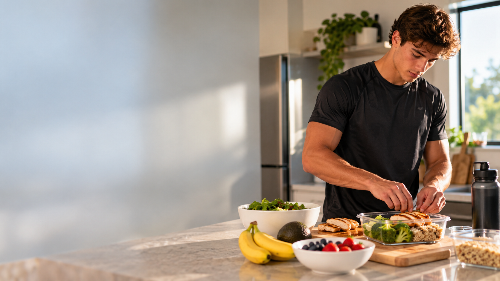
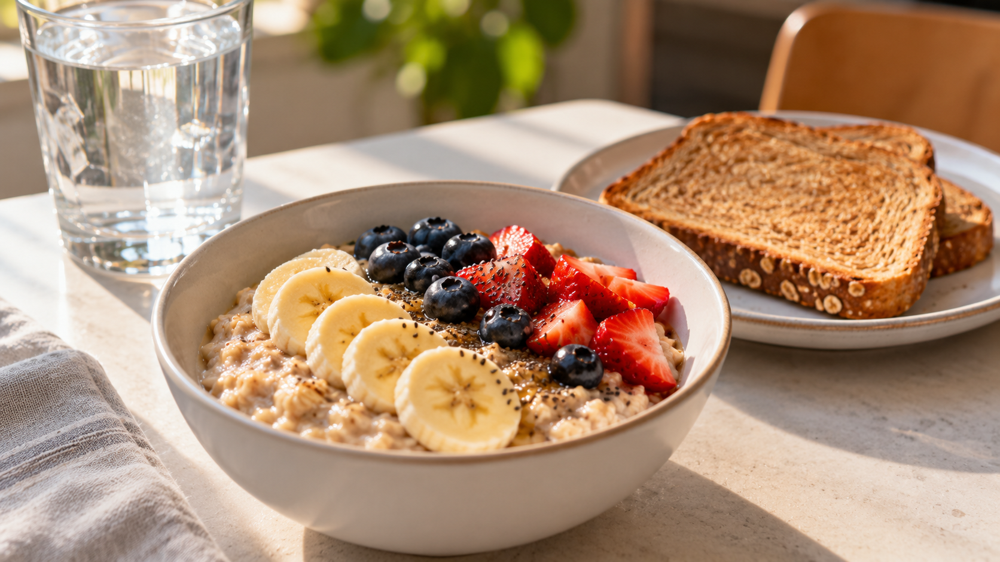
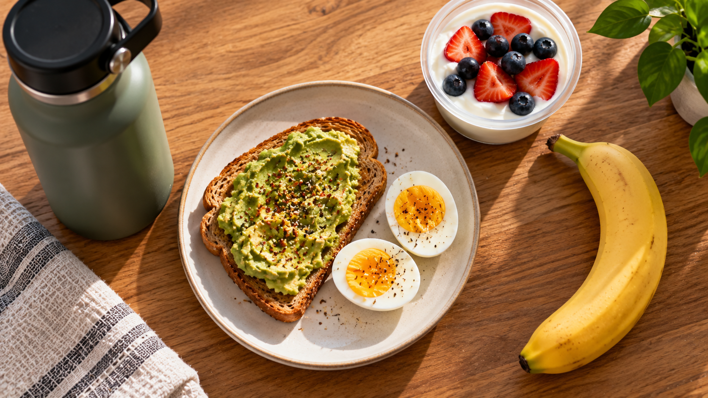
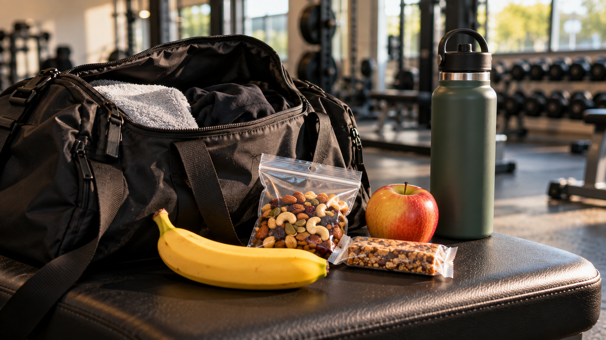
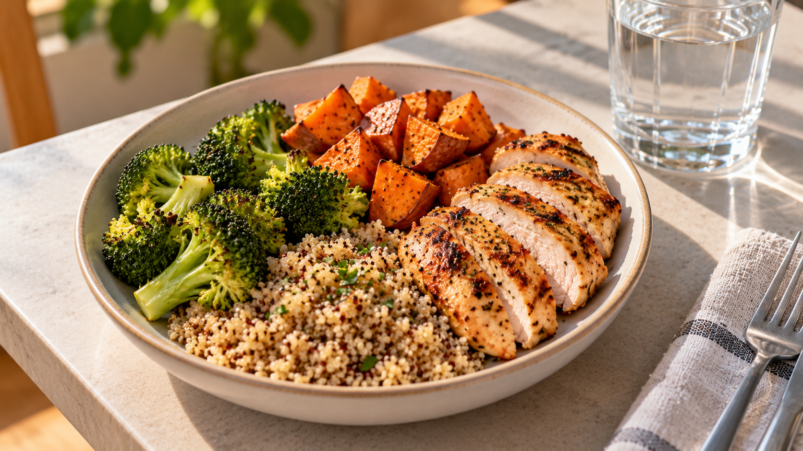

Protein for Muscle
Protein helps your body repair and build muscle after workouts and practices.
Performance-driven nutrition guidance for college athletes with busy schedules, training, and classes.
Build My Nutrition Plan
Understanding nutrition basics can help you feel energized, recover better, and stay ready for practices and games.
Protein helps your body repair and build muscle after workouts and practices.
Carbohydrates give you energy for training, running, lifting, and competition.
Drinking water throughout the day helps you perform and recover better.
Consistent meals, sleep, and recovery habits help you stay prepared.
Learn how to choose meals and snacks before practice or competition so you have steady energy when you need it.
View Pre-Game Fuel

Quick breakfast choices to help you start your day with energy.

Easy snacks that fit between classes, workouts, and practices.

Simple meal ideas that support recovery after a hard workout.